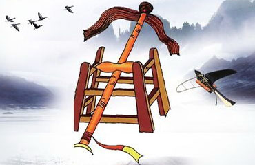
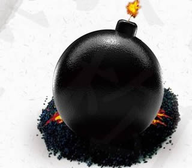

|
 |
 |
 |
火药

火药：改变战争形态的力量
火药的发明，最初源于古代炼丹家追求“长生不老药”的意外发现。
军事应用：在唐代末年，火药开始被应用于军事。到了宋代，各种火药武器（如火箭、火炮、震天雷）迅速发展，并出现了早期的管形火器（如突火枪），这是近代枪炮的雏形。
世界贡献：火药在14世纪初经由阿拉伯人传入欧洲。它不仅推动了欧洲火药武器的发展，更对欧洲社会产生了深远影响——火器使骑士阶层和封建城堡变得脆弱，加速了欧洲封建制度的解体。

| ||||
| ||||
|
火药  火药：改变战争形态的力量 火药的发明，最初源于古代炼丹家追求“长生不老药”的意外发现。 军事应用：在唐代末年，火药开始被应用于军事。到了宋代，各种火药武器（如火箭、火炮、震天雷）迅速发展，并出现了早期的管形火器（如突火枪），这是近代枪炮的雏形。 世界贡献：火药在14世纪初经由阿拉伯人传入欧洲。它不仅推动了欧洲火药武器的发展，更对欧洲社会产生了深远影响——火器使骑士阶层和封建城堡变得脆弱，加速了欧洲封建制度的解体。  |